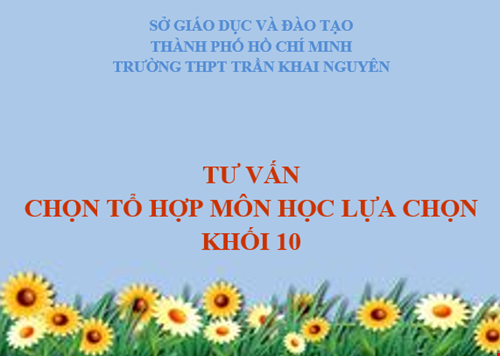
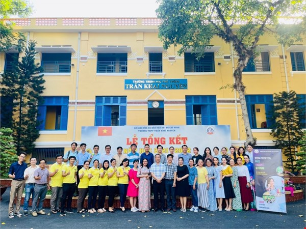
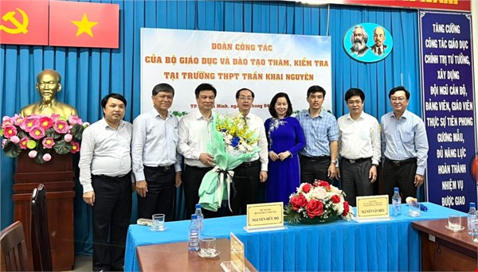

Lễ khai giảng năm học 2022 - 2023
6/9/2022 | Tin tức sự kiện
Hoà chung không khí náo nức, hân hoan của cả nước hưởng ứng ngày toàn dân đưa trẻ đến trường và ngày khai giảng năm học mới, sáng ngày 05/9/2022, trường THPT Trần Khai Nguyên long trọng tổ chức lễ khai giảng năm học 2022 - 2023.

Trường THPT Trần Khai Nguyên tưng bừng chào đón học sinh khối 10 năm học 2022-2023
23/8/2022 | Tin tức sự kiện
Ngày 19/8/2022, học sinh khối 10 trường THPT Trần Khai Nguyên bắt đầu tựu trường, chuẩn bị cho năm học mới 2022-2023.

Tư vấn việc chọn tổ hợp môn học lựa chọn cho học sinh lớp 10 năm học 2022-2023
20/7/2022 | Tin tức sự kiện
Năm học 2022 - 2023, học sinh lớp 10 cả nước sẽ bắt đầu chương trình giáo dục phổ thông mới. Khác với quan điểm “tích hợp” ở bậc học dưới, ở bậc THPT chương trình được xây dựng theo hướng...

Hội Thảo “Stem Education: Past, Present, & Future” Năm Học 2021-2022
16/6/2022 | Tin tức sự kiện
Cách mạng công nghiệp 4.0 - xu hướng kết hợp giữa hệ thống ảo và thực thể, vạn vật kết nối internet - đang thách thức ý niệm của chúng ta về vai trò thực của con người, trong đó có người thầy.

Triển khai Chương trình mới: Chất lượng giáo dục là mục tiêu lớn nhất
27/4/2022 | Tin tức sự kiện
GD&TĐ - Ngày 26/4, Đoàn công tác của Bộ GD&ĐT do Thứ trưởng Nguyễn Hữu Độ đã có buổi kiểm tra công tác chuẩn bị và triển khai chương trình Giáo dục phổ thông (CTGDPT) 2018 tại...